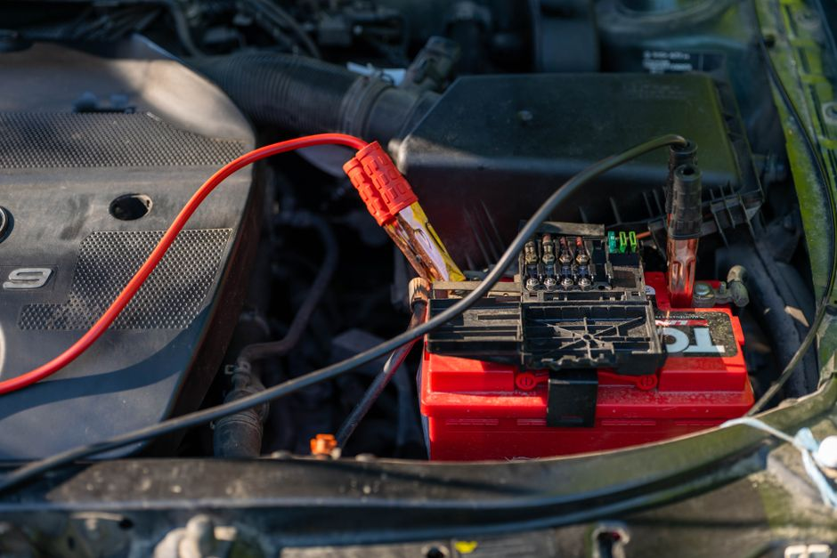
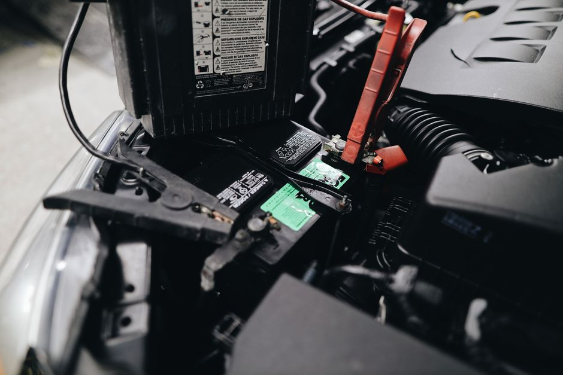

Les symptômes d'une batterie de voiture faible et comment la tester soi-même

Photo: Vladimir Srajber / Pexels
Comprendre les symptômes d'une batterie faible
Une batterie de voiture est souvent le premier point de faiblesse lorsqu'il s'agit de démarrer votre voiture. Les signes d'une batterie défaillante peuvent être difficiles à identifier, mais certains symptômes sont courants et faciles à reconnaître. Par exemple, si vous constatez que votre voiture a du mal à démarrer, il est possible que votre batterie soit en panne. La batterie est l'une des causes les plus fréquentes de problèmes de démarrage.
Démarrage pénible

Photo: Julia Avamotive / Pexels
Si vous avez besoin de plusieurs essais pour démarrer votre voiture, c'est un signe qu'il y a un problème. Un démarreur qui tourne lentement, ou plusieurs tentatives avant le démarrage, peuvent indiquer une batterie fatiguée. Dans de tels cas, la tension du courant de démarrage peut ne pas être suffisante pour activer le moteur.
Éclairage faible ou avertisseur sonore peu puissant
Un autre signe d'une batterie faible est l'instabilité des équipements électriques : phares qui faiblissent, avertisseur sonore (klaxon) peu puissant, lève-vitres lents. Si ces équipements ne fonctionnent pas comme d'habitude, il se peut que la batterie soit déchargée.
Indicateurs électriques
Sur la console de votre voiture, vous trouverez généralement un indicateur qui montre le statut de la batterie. Si ce voyant s'allume pendant le roulement, cela peut indiquer un problème de charge (alternateur) ou de batterie. Faites-le vérifier rapidement par un professionnel.
Test de la batterie à la maison
Testez la tension de la batterie à la maison avec un multimètre, moteur éteint et voiture au repos depuis au moins 30 minutes (borne rouge sur le +, borne noire sur le −). Portez des lunettes et des gants. Pour obtenir des résultats fiables, assurez-vous que la batterie n'a pas été chargée récemment. La tension de la batterie doit être supérieure à 12,4 volts, et en dessous de 12,4 volts, il est probable que la batterie soit déchargée.
Test de l'alternateur (système de charge)
C'est l'alternateur, et non la batterie, qui recharge celle-ci pendant que le moteur tourne. Pour un test simple, mesurez la tension aux bornes de la batterie moteur en marche : elle devrait se situer entre 13,7 et 14,7 volts. Si elle reste proche de 12 volts ou moins, l'alternateur ou son circuit est probablement défaillant : consultez un professionnel.
Réparation d'une batterie déchargée
Si votre batterie est déchargée, rechargez-la avec un chargeur conçu pour cet usage, dans un endroit aéré, à l'écart de toute flamme ou étincelle. Ne chargez jamais une batterie fissurée, gonflée ou gelée. Si elle se décharge souvent ou a plus de quatre à cinq ans, faites-la tester, puis remplacer au besoin, par un professionnel.
Pratique : Test de la batterie à l'arrêt
Imaginez qu'un matin votre voiture démarre très lentement. Vous décidez de tester la batterie avec un multimètre. Vous connectez le multimètre aux bornes de la batterie et constatez qu'elle affiche 12,2 volts. Cette valeur indique que la batterie est en dessous de la normale : elle doit être rechargée, puis testée par un professionnel.
Prévenir les problèmes futurs
Pour éviter que cela ne se reproduise, prenez soin de votre batterie. Gardez les bornes propres et bien serrées. Si votre batterie n'est pas scellée, vérifiez régulièrement le niveau d'électrolyte (ajoutez de l'eau distillée si nécessaire). Si votre batterie se décharge souvent, envisagez une batterie sans entretien.
Conclusion
En résumé, les symptômes d'une batterie de voiture défaillante sont nombreux et faciles à identifier. Si vous suspectez que votre batterie est déchargée, prenez l'initiative de la tester à la maison pour résoudre le problème rapidement. En suivant ces étapes simples, vous pouvez éviter les mauvaises surprises et garantir un démarrage sans encombre chaque matin.
Produits recommandés
En tant que Partenaire Amazon, je réalise un bénéfice sur les achats remplissant les conditions requises.